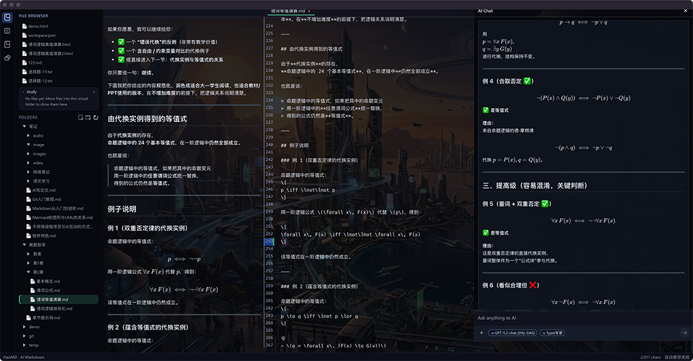
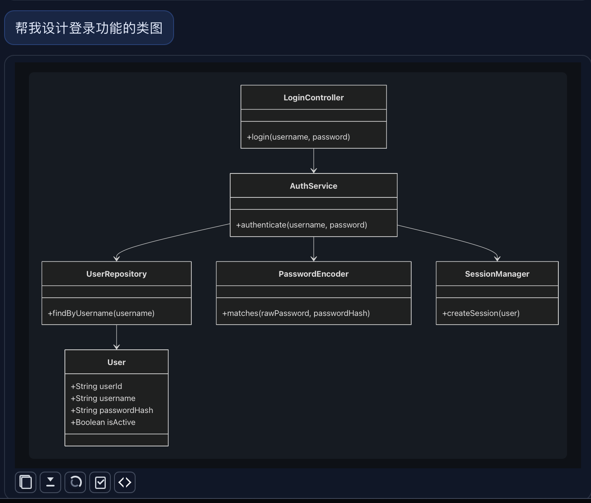
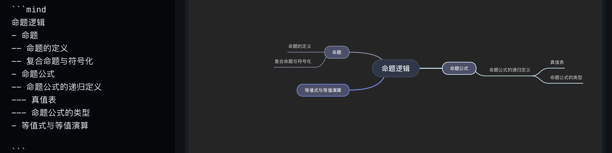

毫秒级响应的创作引擎
基于 CodeMirror 6 深度定制，支持多标签无缝切换、自动保存与大文件实时渲染。无论多长，思路从不卡顿。
- 千万级字符流畅滚动
- 分屏同步预览
- 结构化大纲导航
HaoMD 是专为深度创作打造的高性能 AI 工作台。在这里，写作更流畅，知识管理更有序。 通过深度集成的 AI 助理与全场景渲染能力，助你轻松定制专属技能与工作流，让每一份灵感都能从草稿进化为专业的交付成果。


这不是一个碎片化的工具，而是将 Markdown 的“生产、辅助、管理与交付”整合成一个高并发、低延迟的创作工作台。
基于 CodeMirror 6 深度定制，支持多标签无缝切换、自动保存与大文件实时渲染。无论多长，思路从不卡顿。
原生集成物理文件管理 (Agent FS)，支持通过自然语言执行删除、重命名与自动化目录组织，让 AI 真正参与生产力流。
内置 Mermaid、KaTeX 与动态思维导图，将枯燥的语法瞬间转化为直观的结构，让知识触手可及。
以 Tauri 2 + Rust 为底座，兼顾极致的交付体积、原生系统调用能力与离线优先的数据安全感。
支持深度自定义主题与全屏背景系统，在编辑器与 AI 面板之间建立和谐的视觉节奏。
为编辑器和 AI 会话设置统一背景，让长时间创作保持稳定的视觉节奏。
用 Markdown 管理数学表达、教学材料和结构化说明，不必切换到额外工具。
流程图、类图和关系图直接和正文共存，适合方案设计、系统说明和团队沟通。

快速切换到思维导图视角，帮助梳理复杂主题、课程内容和长篇文档结构。
支持文件、目录与虚拟工作区挂载，快速定位并进入创作上下文。
分屏预览、大纲定位与快捷操作，确保长篇文档的编辑依然游刃有余。
在当前上下文中激活 AI 助理，处理从内容改写到文件组织的复杂逻辑。
支持 HTML、PDF 与 Word 模板导出，让知识成果直接转化为交付资产。
React 19 + TypeScript + Vite
驱动复杂的编辑器外壳、AI 面板与跨组件状态流转。Tauri 2 + Rust
提供高性能文件 I/O、系统资源调度与跨平台分发保障。CodeMirror 6 / Unified 生态
涵盖 Markdown 解析、实时语法高亮与多格式转换链路。OpenAI / Gemini / Dify 反代
多模型协议兼容，支持主流模型与私有化部署的平滑接入。提供 Windows、macOS Intel、macOS Apple Silicon 与 Linux 安装包，下载后即可开始体验 AI 驱动的 Markdown 工作流。